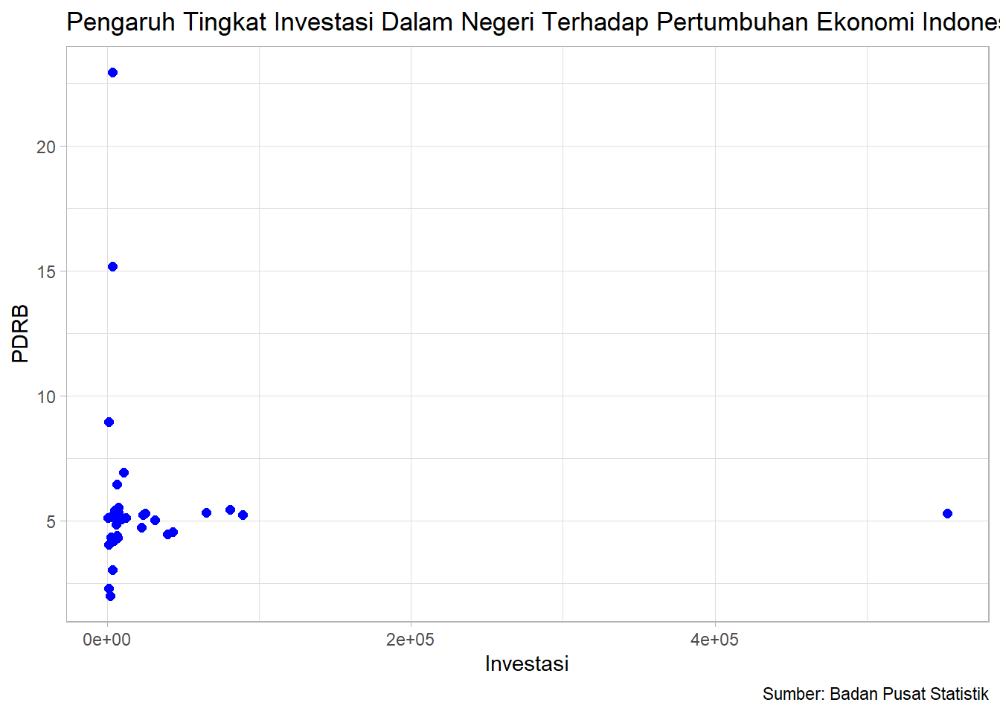

library("readxl")
library("dplyr")
library("ggplot2")Pengaruh Tingkat Investasi Dalam Negeri Terhadap Pertumbuhan Ekonomi Indonesia Tahun 2022
Metode Penelitian Politeknik APP Jakarta

1 Pendahuluan
1.1 Latar belakang
Indonesia sebagai negara kepulauan dengan berbagai sumber daya alam dan potensi ekonomi memerlukan investasi yang signifikan untuk mendorong pertumbuhan ekonomi yang berkelanjutan. Investasi dalam negeri memiliki peranan penting dalam menentukan arah pertumbuhan ekonomi sebuah negara. Investasi dalam negeri memiliki peranan yang sangat penting dalam menentukan arah pertumbuhan ekonomi sebuah negara, karena dapat memberikan dampak yang luas terhadap berbagai sektor ekonomi dan masyarakat secara keseluruhan. Oleh karena itu, strategi pengembangan investasi domestik menjadi salah satu fokus utama dalam upaya Indonesia untuk mencapai pertumbuhan ekonomi yang berkelanjutan dan berdaya saing global.
PDRB (Produk Domestik Regional Bruto) merupakan salah satu indikator penting yang digunakan untuk mengukur kesehatan ekonomi suatu wilayah. Analisis mengenai pengaruh investasi dalam negeri terhadap PDRB di provinsi-provinsi Indonesia memiliki relevansi yang tinggi dalam konteks pembangunan ekonomi regional. Dengan pemahaman yang lebih baik tentang faktor-faktor yang mempengaruhi pertumbuhan ekonomi di tingkat regional, diharapkan dapat membantu pemerintah, pengusaha, dan pemangku kepentingan lainnya dalam merumuskan kebijakan ekonomi yang lebih efektif dan berkelanjutan untuk setiap provinsi di Indonesia.
Penelitian ini bertujuan untuk mengidentifikasi dan menganalisis sejauh mana investasi dalam negeri mempengaruhi PDRB di provinsi-provinsi Indonesia. Dengan memperhatikan karakteristik ekonomi dan sosial setiap provinsi, penelitian ini diharapkan dapat memberikan pemahaman yang lebih baik tentang hubungan antara investasi dalam negeri dan pertumbuhan ekonomi regional di Indonesia. Untuk memahami dinamika ini dengan lebih mendalam, penelitian ini akan menganalisis pengaruh tingkat investasi dalam negeri terhadap pertumbuhan ekonomi di berbagai provinsi di Indonesia pada tahun 2022.
1.2 Ruang lingkup
Penelitian ini akan mengeksplorasi pengaruh tingkat investasi dalam negeri terhadap pertumbuhan ekonomi Indonesia pada tahun 2022, dengan fokus pada analisis provinsi-provinsi yang ada di Indonesia. Data akan dikumpulkan dari berbagai sumber resmi dan analisis akan dilakukan untuk menentukan hubungan antara investasi dan pertumbuhan ekonomi.
1.3 Rumusan masalah
- Bagaimana pengaruh tingkat investasi dalam negeri terhadap pertumbuhan ekonomi Indonesia pada tahun 2022?
- Apakah ada perbedaan pengaruh investasi terhadap pertumbuhan ekonomi antar provinsi di Indonesia?
1.4 Tujuan dan manfaat penelitian
Tujuan dari penelitian ini adalah untuk menganalisis pengaruh tingkat investasi dalam negeri terhadap pertumbuhan ekonomi di Indonesia tahun 2022, serta mengetahui variabilitas pengaruh investasi terhadap pertumbuhan ekonomi.
Manfaat dari penelitian ini diharapkan dapat memberikan pemahaman yang lebih baik tentang bagaimana investasi dalam negeri mempengaruhi pertumbuhan ekonomi di tingkat provinsi, yang dapat menjadi dasar bagi kebijakan pembangunan ekonomi di masa depan.
1.5 Package
Penelitian ini menggunakan Packages antara lain sebagai berikut:
2 Studi pustaka
Berdasarkan literatur yang ada, investasi dalam negeri memiliki peranan penting dalam menstimulasi pertumbuhan ekonomi suatu negara (Smith, 2018). Selain itu, tingkat investasi yang tinggi juga dapat menciptakan lapangan pekerjaan dan mendorong inovasi (Johnson, 2020). Namun, pengaruh investasi terhadap pertumbuhan ekonomi dapat bervariasi antar provinsi (Wijaya, 2021).
3 Metode penelitian
3.1 Data
Data yang saya gunakan adalah Tingkat Investasi Dalam Negeri dan PDRB tiap provinsi di Indonesia
| Provinsi | Investasi | PDRB |
|---|---|---|
| Aceh | 4.424 | 4,21 |
| Sumatra Utara | 22.789 | 4,73 |
| Sumatera Barat | 2.559 | 4,36 |
| Riau | 43.062 | 4,55 |
| Jambi | 8.882 | 5,13 |
| Sumatera Selatan | 23.526 | 5,23 |
| Bengkulu | 6.957 | 4,31 |
| Lampung | 5.809 | 4,28 |
| Bangka Belitung | 6.309 | 4,40 |
| Kep. Riau | 4.817 | 5,09 |
| DKI Jakarta | 89.223 | 5,25 |
| Jawa Barat | 80.808 | 5,45 |
| Jawa Tengah | 24.992 | 5,31 |
| DI Yogyakarta | 2.275 | 5,15 |
| Jawa Timur | 65.355 | 5,34 |
| Banten | 31.283 | 5,03 |
| Bali | 6.002 | 4,84 |
| Nusa Tenggara Barat | 11.031 | 6,95 |
| Nusa Tenggara Timur | 3.459 | 3,05 |
| Kalimantan Barat | 9.382 | 5,07 |
| Kalimantan Tengah | 6.556 | 6,45 |
| Kalimantan Selatan | 12.310 | 5,11 |
| Kalimantan Timur | 39.595 | 4,48 |
| Kalimantan Utara | 7.526 | 5,34 |
| Sulawesi Utara | 5.042 | 5,42 |
| Sulawesi Tengah | 3.758 | 15,17 |
| Sulawesi Selatan | 7.528 | 5,09 |
| Sulawesi Tenggara | 7.596 | 5,53 |
| Gorontalo | 1.113 | 4,04 |
| Sulawesi Barat | 1.313 | 2,30 |
| Maluku | 611 | 5,11 |
| Maluku Utara | 3.414 | 22,94 |
| Papua Barat | 2.139 | 2,01 |
| Papua | 1.311 | 8,97 |
Penelitian ini menggunakan data yang bersumber dari Badan Pusat Statistik (BPS)
Baca data
library("readxl")
dat<-read_excel("investasipdrb.xlsx")
head(dat)# A tibble: 6 × 2
investasi pdrb
<dbl> <dbl>
1 4424 4.21
2 22789 4.73
3 2559 4.36
4 43062 4.55
5 8882 5.13
6 23526 5.23library("ggplot2")
ggplot(data=dat,aes(x=investasi,y=pdrb))+
geom_point(color="blue",size=2)+
labs(title="Pengaruh Tingkat Investasi Dalam Negeri Terhadap Pertumbuhan Ekonomi Indonesia Tahun 2022",
x="Investasi",
y="PDRB",
caption="Sumber: Badan Pusat Statistik")+
theme_light()
3.2 Metode analisis
Penelitian ini menggunakan metode kuantitatif dengan data sekunder. Data investasi dalam negeri dan pertumbuhan ekonomi provinsi-provinsi di Indonesia dikumpulkan dari sumber resmi seperti Badan Pusat Statistik (BPS) dan sumber-sumber lain yang relevan. Analisis data dilakukan dengan menggunakan perangkat lunak statistik seperti R dan Rstudio. Teknik analisis yang digunakan adalah regresi linier untuk mengetahui hubungan antara variabel investasi dan pertumbuhan ekonomi.
Spesifikasi yang dilakukan adalah:
\[ y_{t}=\beta_0 + \beta_1 x_t+\mu_t \] di mana \(y_t\) adalah PDRB dan \(x_t\) adalah Investasi.
4 Pembahasan
4.1 Pembahasan masalah
Dalam penelitian ini, analisis dilakukan dengan menggunakan metode (OLS) untuk mengaitkan data investasi dalam negeri dengan PDRB di berbagai provinsi di Indonesia. Data investasi dalam negeri dan PRDB dari berbagai provinsi tersebut telah digabungkan dan disesuaikan untuk analisis regresi.
library("readxl")
dat<-read_excel("investasipdrb.xlsx")
head(dat)# A tibble: 6 × 2
investasi pdrb
<dbl> <dbl>
1 4424 4.21
2 22789 4.73
3 2559 4.36
4 43062 4.55
5 8882 5.13
6 23526 5.234.2 Analisis masalah
Tampilan data yang dihasilkan dari regresi tersebut adalah sebagai berikut.
reg1<-lm(investasi~pdrb,data=dat)
summary(reg1)
Call:
lm(formula = investasi ~ pdrb, data = dat)
Residuals:
Min 1Q Median 3Q Max
-33988 -27415 -24267 -9116 520716
Coefficients:
Estimate Std. Error t value Pr(>|t|)
(Intercept) 37783 30154 1.253 0.219
pdrb -1079 4450 -0.242 0.810
Residual standard error: 94690 on 33 degrees of freedom
Multiple R-squared: 0.001778, Adjusted R-squared: -0.02847
F-statistic: 0.05879 on 1 and 33 DF, p-value: 0.80995 Kesimpulan
Dalam kesimpulannya, berdasarkan analisis regresi yang dilakukan, tidak ditemukan hubungan yang signifikan antara investasi dan PDRB di berbagai provinsi di Indonesia. Variabel lain mungkin perlu ditambahkan atau model yang lebih kompleks mungkin diperlukan untuk menjelaskan variabilitas investasi dengan lebih baik.
6 Referensi
BPS Prov Sumatera Selatan. (t.t.). Diambil 11 Januari 2024, dari https://sumsel.bps.go.id/indicator/104/856/1/laju-pdrb-menurut-provinsi.html
Indonesia, B. P. S. (t.t.). Realisasi Investasi Penanaman Modal Dalam Negeri Menurut Provinsi (Investasi)—Tabel Statistik. Diambil 11 Januari 2024, dari https://www.bps.go.id/id/statistics-table/2/NzkzIzI=/realisasi-investasi-penanaman-modal-dalam-negeri-menurut-provinsi–investasi—milyar-rupiah-.html
Pentingnya Peran Investasi dalam Pertumbuhan Ekonomi Indonesia di Kala Pandemi | Invest Indonesia. (t.t.). Diambil 11 Januari 2024, dari https://investindonesia.go.id/id/artikel-investasi/detail/pentingnya-peran-investasi-dalam-pertumbuhan-ekonomi-indonesia-di-kala-pand